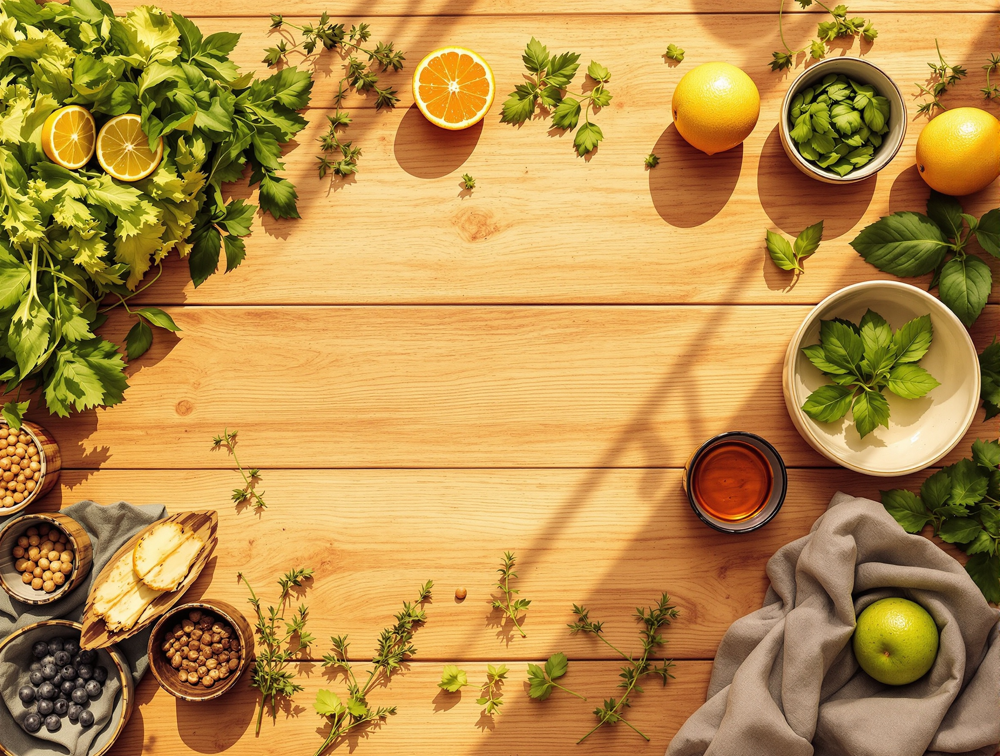

Why You Can't Catch Up on Sleep (And What Actually Works)
The science of sleep debt is more unforgiving than you've been told — but there's a precise recovery window that most people miss entirely.

Why You're Exhausted Even After 8 Hours
You're sleeping the right amount but waking up wrecked. The problem isn't duration — it's what's happening inside those 8 hours.

I Made Kimchi Fried Rice Healthy Without Ruining It
Traditional kimchi fried rice is already more nutritious than most wellness food. Here's what I changed — and what I deliberately left alone.

The 5-Minute Morning Habit That Changed My Whole Day
I spent years optimising my morning for productivity. The change that actually worked took five minutes and cost nothing.

You Don't Need the Gym — You Need to Move Like a Korean Grandma
Korean grandmothers are among the most physically capable older adults in the world. Their secret isn't exercise — it's movement woven into life.

The 3pm Crash Isn't Normal — It's a Timing Problem
That wall you hit at 3pm isn't weakness. It's your circadian system running a process at the wrong time.

Your Gut Is Your Second Brain — But Not in the Way Influencers Mean
The gut-brain connection is real and well-evidenced. It's also one of the most mangled concepts in wellness content.

Nunchi: The Korean Art of Reading the Room
눈치 (nunchi) is usually translated as social awareness. In Korean culture it's closer to a full-body attunement — and I think of it as a nervous system practice.

Perimenopause Ruined My Sleep. Here's What Actually Helped.
The honest picture is more complicated than either the dismissive medical mainstream or the supplement industry will tell you.

4-7-8 Breathing Is Fine. This Is Better.
There's a more precise method — less memorable as a ratio, more effective as a nervous system intervention.